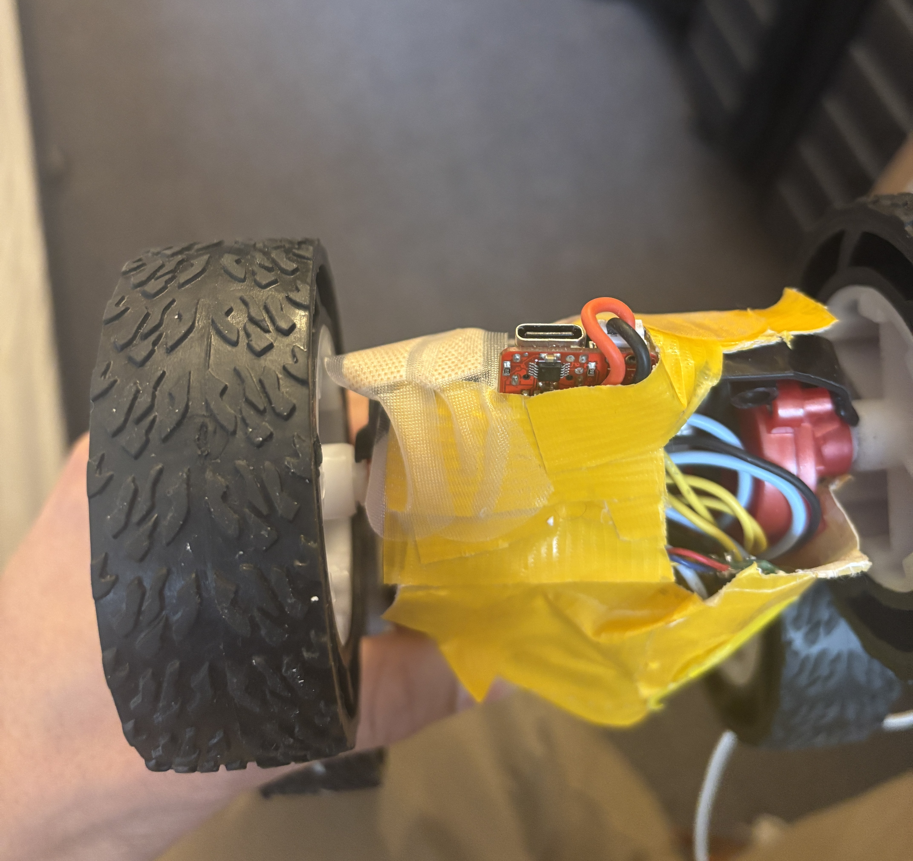
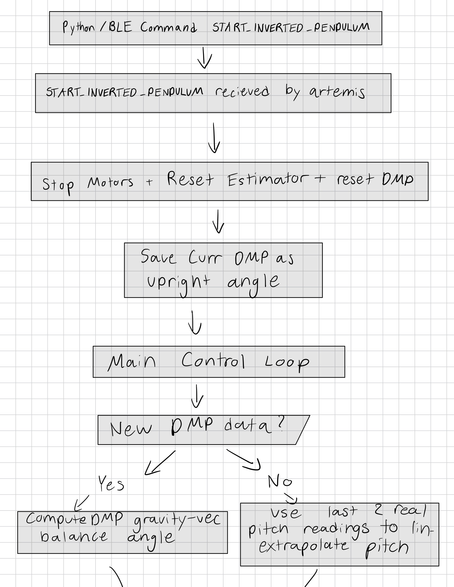

Lab 12: Inverted Pendulum
ECE 4160 – Fast Robots
Objective
The goal of this lab was to make the robot balance on two wheels like an inverted pendulum. This required using the IMU to estimate the robot's pitch angle, then using closed loop control to drive the wheels underneath the robot's center of mass. Unlike some of the previous labs, this lab was very open ended, so a large part of the challenge was deciding which sensor measurements, control structure, and tuning strategy would work best for my specific robot.
Initial Approach
My first approach was to reuse the IMU orientation code I had already developed in previous labs. I initially tried using a complementary filter with accelerometer and gyroscope data to estimate pitch. I planed to compare the current pitch to a target pitch and then use a PID controller to drive the wheels forward or backward depending on the direction the robot was falling.
I also added BLE commands to make tuning easier. Instead of uploading new Arduino code every time I wanted to test a different controller, I could send new proportional, derivative, and integral gains over BLE. I also added a BLE command to set the minimum and maximum PWM values used by the inverted pendulum controller. This was important because the motors had a minimum PWM value before the wheels would actually move.
case SET_INVERTED_PENDULUM_GAINS: {
success = robot_cmd.get_next_value(inverted_pendulum_kp);
if (!success) return;
success = robot_cmd.get_next_value(inverted_pendulum_kd);
if (!success) return;
success = robot_cmd.get_next_value(inverted_pendulum_ki);
if (!success) return;
inverted_pendulum_integral = 0.0f;
tx_estring_value.clear();
tx_estring_value.append("Inverted gains set.");
tx_characteristic_string.writeValue(tx_estring_value.c_str());
break;
}
case SET_INVERTED_PENDULUM_PWM: {
success = robot_cmd.get_next_value(inverted_pendulum_min_pwm);
if (!success) return;
success = robot_cmd.get_next_value(inverted_pendulum_max_pwm);
if (!success) return;
inverted_pendulum_min_pwm = constrain(inverted_pendulum_min_pwm, 0, 255);
inverted_pendulum_max_pwm = constrain(inverted_pendulum_max_pwm, 0, 255);
tx_estring_value.clear();
tx_estring_value.append("Inverted PWM set");
tx_characteristic_string.writeValue(tx_estring_value.c_str());
break;
}
This made the testing process much faster because I could run commands such as:
ble.send_command(CMD.SET_INVERTED_PENDULUM_GAINS, "6.0|3.2|2.0")
ble.send_command(CMD.SET_INVERTED_PENDULUM_PWM, "35|80")
Motor Command Mapping
One problem I found early on was that small PWM values often did not move the wheels at all. However, simply clamping every small command to the minimum PWM also caused the robot to twitch because small control commands immediately became fairly large motor commands. To improve this, I mapped the controller output to a motor command by adding the minimum PWM value and scaling the magnitude of the command.
void set_inverted_pendulum_drive_pwm(int pwm) {
pwm = constrain(pwm, -inverted_pendulum_max_pwm, inverted_pendulum_max_pwm);
int mag = abs(pwm);
int updated_pwm = 0;
if (mag < MICRO_DEADZONE) {
updated_pwm = 0;
} else {
updated_pwm = inverted_pendulum_min_pwm + (int)(0.25f * mag);
updated_pwm = constrain(updated_pwm,
inverted_pendulum_min_pwm,
inverted_pendulum_max_pwm);
}
if (updated_pwm == 0) {
analogWrite(motorL1, 0);
analogWrite(motorL2, 0);
analogWrite(motorR1, 0);
analogWrite(motorR2, 0);
return;
}
int right_pwm = constrain((int)(updated_pwm * 1.35f), 0, 255);
if (pwm < 0) {
analogWrite(motorL1, updated_pwm);
analogWrite(motorL2, 0);
analogWrite(motorR1, 0);
analogWrite(motorR2, right_pwm);
} else {
analogWrite(motorL1, 0);
analogWrite(motorL2, updated_pwm);
analogWrite(motorR1, right_pwm);
analogWrite(motorR2, 0);
}
}
I tuned the scale factor in this mapping because the raw controller output was often too aggressive. Lowering the multiplier reduced how quickly the command saturated at the maximum PWM. This helped because I found that high gains made the robot respond quickly, but they also caused the PWM to hit the maximum value too often.
I also added per-direction motor scaling because the two wheels didn't spin at the same speed. On top of this each wheel spun a different speeds when going forward vs backward. This meant that I had to use 4 different variables to tune these speeds. I added a command that allowed me to tune the left-forward, left-backward, right-forward, and right-backward motor outputs over BLE without uploading new code each time.
Sensor and Mechanical Challenges
A major challenge was that the robot's behavior was extremely sensitive to the IMU mounting. At one point, the IMU was slightly crooked and was still attached to a cable that could move around. This caused the measured angle to shift while the robot was running. After securing the IMU more rigidly and placing it in the correct orientation, the pitch readings became much more consistent.
I also noticed that when I held the robot in the air with the battery connected, the pitch estimate sometimes appeared to jump by a large amount. When I unplugged the motor's battery and ran the same test, the pitch estimates were much more stable. This led me to believe that motor vibration was shaking the robot and affecting the IMU gyroscope readings. The IMU was also very loosely secured so I made it more secure so it wouldn't move around as much in the robot.

DMP Pitch Estimation
After comparing my approach with other successful inverted pendulum implementations, I decided to use DMP data for the pitch estimate instead of my complementary filter. This allowed me to get more acurate and stable pitch readings drastically improving the controller.
A large part of the debugging process was figuring out the correct axis and sign for the DMP pitch. At first, I tried using generic roll and pitch equations, but the selected angle did not behave correctly. In some tests, the angle would increase in magnitude no matter which direction the robot tilted. This meant the controller could not distinguish between falling forward and falling backward, so it would not reliably drive the wheels in the correct direction.
The was able to be fixed with computing a balance angle from the DMP quaternion instead of directly using raw roll or pitch. I converted the quaternion into a gravity vector in the IMU frame and then selected the gravity-vector components that matched my robot's forward/backward pendulum axis. This made the pitch value change smoothly in opposite directions when the robot tilted forward and backward.
Since the exact upright angle depended on the IMU mounting and the robot's center of mass, I also used a startup offset. When the inverted pendulum command starts, the robot records the current upright DMP angle and subtracts that value from future pitch readings. This makes the target pitch 0 degrees relative to the starting balance position instead of relying on an absolute DMP angle.
ip_dmp_offset = startup_angle;
inverted_pendulum_target_pitch = 0.0f;
float corrected_pitch = raw_dmp_pitch - ip_dmp_offset;
pitch_cf = corrected_pitch;
bool read_dmp_balance_pitch(float &balance_pitch_deg) {
icm_20948_DMP_data_t data;
bool got_quat = false;
do {
myICM.readDMPdataFromFIFO(&data);
if ((myICM.status != ICM_20948_Stat_Ok) &&
(myICM.status != ICM_20948_Stat_FIFOMoreDataAvail)) {
return false;
}
if ((data.header & DMP_header_bitmap_Quat6) > 0) {
double q1 = ((double)data.Quat6.Data.Q1) / 1073741824.0;
double q2 = ((double)data.Quat6.Data.Q2) / 1073741824.0;
double q3 = ((double)data.Quat6.Data.Q3) / 1073741824.0;
double q0_sq = 1.0 - ((q1 * q1) + (q2 * q2) + (q3 * q3));
if (q0_sq < 0.0) q0_sq = 0.0;
double q0 = sqrt(q0_sq);
double qw = q0;
double qx = q2;
double qy = q1;
double qz = -q3;
double t2 = 2.0 * (qw * qy - qx * qz);
if (t2 > 1.0) t2 = 1.0;
if (t2 < -1.0) t2 = -1.0;
float rawPitch = asin(t2) * 180.0f / M_PI;
balance_pitch_deg = rawPitch;
got_quat = true;
}
} while (myICM.status == ICM_20948_Stat_FIFOMoreDataAvail);
return got_quat;
}
To verify that the axis was correct, I printed the selected pitch value while manually rotating the robot. The correct behavior was that tilting the robot one way moved the pitch above the target, while tilting it the other way moved the pitch below the target. Once this was true, the sign of the motor response could be tuned separately.
I also increased the DMP output rate to its fastest setting. This was important because the inverted pendulum controller needed orientation updates as quickly as possible. If the DMP output was too slow, the robot could fall several degrees before the controller received a new pitch estimate. Before speeding the controller up, the robot would go to far in each direction and would not react fast enough to maintain balance.
myICM.setDMPODRrate(DMP_ODR_Reg_Quat6, 0);
Control Loop
The main balancing controller intially used proportional, integral, and derivative control. I quickly found out that integral windup was causing problem with the system so I set it to 0. If the robot falls too far, the integral term can build up and make the motors drive too aggressively when the robot is placed back near the upright position. I then tested kp values ranging from 4 - 10 and small kd values around 0.05. I ended up settling around a kp value of 6 and realized that kd also wasn't having a postive effect on the controller so I ended up removing it.
void inverted_pendulum_step() {
if (!update_inverted_pendulum_pitch()) {
return;
}
unsigned long now_us = micros();
if (last_inverted_pendulum_us == 0) {
last_inverted_pendulum_us = now_us;
return;
}
float dt = (now_us - last_inverted_pendulum_us) / 1000000.0f;
last_inverted_pendulum_us = now_us;
if (dt <= 0.0f || dt > 0.05f) {
return;
}
float error = inverted_pendulum_target_pitch - pitch_cf;
inverted_pendulum_integral += error * dt;
inverted_pendulum_integral = constrain(inverted_pendulum_integral, -50.0f, 50.0f);
float control_signal = inverted_pendulum_kp * error
- inverted_pendulum_kd * pitch_gyro
+ inverted_pendulum_ki * inverted_pendulum_integral;
int pwm_val = constrain((int)control_signal,
-inverted_pendulum_max_pwm,
inverted_pendulum_max_pwm);
set_inverted_pendulum_drive_pwm(pwm_val);
}
I also added debug prints for pitch, error, rate, PWM, and the approximate balance loop frequency. These prints helped diagnose whether the problem was the sensor estimate, the controller sign, the motor direction, or the loop speed. I eventually removed all print statments to make sure the loop could run as fast as possible.
Pause and Resume Behavior
Originally, the robot would stop completely if the pitch error became too large. This was useful for safety, but it made testing difficult since I had to restart the controller every time the robot fell out of range. I changed this behavior so that when the robot fell out of the allowed angle range, the controller paused instead of fully shutting off. Then, when I manually placed the robot close to the target angle again, the controller resumed.
This made tuning much easier because I could quickly test different gains and motor directions without restarting the BLE command sequence every time the robot tipped too far.
if (abs(error) > INVERTED_PENDULUM_FALL_ANGLE_DEG) {
set_inverted_pendulum_drive_pwm(0);
inverted_pendulum_paused = true;
SERIAL_PORT.print("Paused. Error: ");
SERIAL_PORT.println(error);
return;
}
if (inverted_pendulum_paused) {
set_inverted_pendulum_drive_pwm(0);
if (abs(error) < INVERTED_PENDULUM_RESUME_ANGLE_DEG) {
inverted_pendulum_paused = false;
inverted_pendulum_integral = 0.0f;
last_inverted_pendulum_us = micros();
SERIAL_PORT.println("Resuming inverted pendulum");
}
return;
}
Loop Speed & Linear Extrapolation
I also avoided adding delays inside the balancing path. In earlier tests, I found that waiting for new sensor data could effectively slow the controller down and make the robot react too late. For this stunt, even small delays had a noticable effect since the robot can fall several degrees in a short amount of time.
To further reduce the effect of waiting for DMP data, I used the last two real pitch readings to estimate the current pitch when there was no new DMP packet available. This let the controller keep running between real DMP readings instead of blocking until the next sensor update. This allowed me to run an update loop at about 113 Hz as opposed to 56 Hz when only using DMP updates.
Flowchart Diagram


Results
After tuning the IMU mounting, DMP pitch calculation, motor direction, PWM mapping, and controller gains, the robot was able to respond to forward and backward tipping and keep itself decently balanced on two wheels. The final system was still sensitive to the exact starting angle, battery level, and vibration, but it behaved much more consistently than the early versions.
I also tested the robot while holding it in the air. With the motor battery unplugged, the pitch estimate was stable and stayed within a small range. With the motors powered, the readings became noisier because of vibration. This confirmed that the controller was not only limited by software, but also by the physical construction of the robot.
Conclusion
This lab showed that inverted pendulum control is very sensitive to both software and hardware details. At first, I treated the problem mostly as a PID tuning problem, but I eventually found that the bigger issues were sensor orientation, DMP axis mapping, motor deadband, motor asymmetry, loop speed, and vibration. Once these were improved, the controller became much more predictable.
The most important improvement was switching to a DMP-based pitch estimate and speeding up the update loop as much as possible. Adding BLE commands for gains and PWM limits also made tuning much faster. Although the final performance was still not perfectly stable, the robot was able to use closed loop control to react to tipping and maintain the inverted pendulum position for short periods.